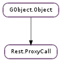

| Subclasses: | Rest.OAuth2ProxyCall, Rest.OAuthProxyCall, RestExtras.FlickrProxyCall, RestExtras.LastfmProxyCall |
|---|
| add_header(header, value) | |
| add_param(name, value) | |
| add_param_full(param) | |
| cancel() | |
| get_method() | |
| get_payload() | |
| get_payload_length() | |
| get_status_code() | |
| get_status_message() | |
| invoke_async(cancellable, callback, *user_data) | |
| invoke_finish(result) | |
| lookup_header(header) | |
| lookup_param(name) | |
| lookup_response_header(header) | |
| remove_header(header) | |
| remove_param(name) | |
| run(loop) | |
| serialize_params() | |
| set_function(function) | |
| set_method(method) | |
| sync() |
| Name | Type | Flags | Description |
|---|---|---|---|
| proxy | Rest.Proxy | r/w/c | Proxy for this call |
None
| Name | Type | Access |
|---|---|---|
| parent | GObject.Object | r |
Bases: GObject.Object
Rest.ProxyCall has no publicly available members.
| Parameters: |
|---|
Add a header called header with the value value to the call. If a header with this name already exists, the new value will replace the old.
| Parameters: |
|---|
Add a query parameter called param with the string value value to the call. If a parameter with this name already exists, the new value will replace the old.
| Parameters: | param (Rest.Param) – |
|---|
| Return type: | str |
|---|
Get the HTTP method to use when making the call, for example GET or POST.
| Returns: | A pointer to the payload. This is owned by Rest.ProxyCall and should not be freed. |
|---|---|
| Return type: | str |
Get the return payload.
| Returns: | the length of the payload in bytes. |
|---|---|
| Return type: | int |
Get the length of the return payload.
| Returns: | The status message. This string is owned by Rest.ProxyCall and should not be freed. |
|---|---|
| Return type: | str |
Get the human-readable HTTP status message for the call.
| Parameters: |
|
|---|
A GIO-style version of Rest.ProxyCall.async ().
| Parameters: | result (Gio.AsyncResult) – the result from the Gio.AsyncReadyCallback |
|---|---|
| Raises: | GLib.GError |
| Returns: | True on success |
| Return type: | bool |
| Parameters: | header (str) – The header name |
|---|---|
| Returns: | The header value, or None if it does not exist. This string is owned by the Rest.ProxyCall and should not be freed. |
| Return type: | str |
Get the value of the header called header.
| Parameters: | name (str) – The paramter name |
|---|---|
| Returns: | The parameter value, or None if it does not exist. This string is owned by the Rest.ProxyCall and should not be freed. |
| Return type: | Rest.Param |
Get the value of the parameter called name.
| Parameters: | header (str) – The name of the header to lookup. |
|---|---|
| Return type: | str |
Get the string value of the header header or None if that header is not present or there are no headers.
| Parameters: | header (str) – The header name |
|---|
Remove the header named header from the call.
| Parameters: | name (str) – The paramter name |
|---|
Remove the parameter named name from the call.
| Parameters: | loop (GLib.MainLoop) – |
|---|---|
| Raises: | GLib.GError |
| Return type: | bool |
| Raises: | GLib.GError |
|---|---|
| Returns: | True if the serialization was successful, False otherwise. |
| Return type: | bool, content_type: str, content: str, content_len: int |
Invoker for a virtual method to serialize the parameters for this Rest.ProxyCall.
| Parameters: | function (str) – The function to call |
|---|
Set the REST “function” to call on the proxy. This is appended to the URL, so that for example a proxy with the URL http://www.example.com/ and the function test would actually access the URL http://www.example.com/test
| Parameters: | method (str) – The HTTP method to use |
|---|
Set the HTTP method to use when making the call, for example GET or POST.
| Raises: | GLib.GError |
|---|---|
| Return type: | bool |